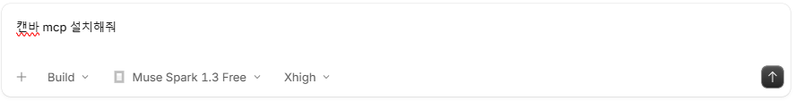
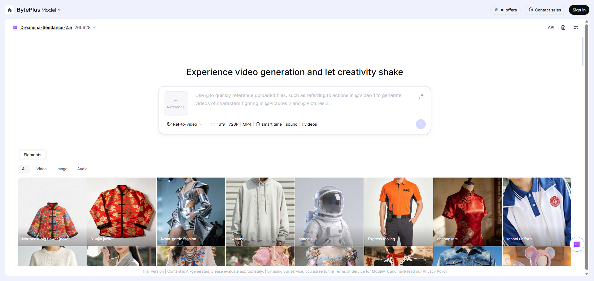

상세 과정
AI로 이미지/영상 만들기 - 수업용 애니메이션 만들기
Higgsfield MCP와 관련 스킬을 준비하고, 이미지를 만든 뒤 BytePlus Model에서 애니메이션을 만들어봅니다.
실습 순서
Higgsfield MCP와 스킬 설치하기
AI 앱에 Higgsfield MCP와 관련 스킬을 조사해 설치해 달라고 요청합니다.
AI에 이렇게 요청해 보세요
Higgsfield MCP와 이미지 생성 스킬을 조사해서 설치해줘.

MCP를 켜고 로그인하기
Higgsfield MCP를 설치한 뒤 AI의 안내에 따라 MCP를 켜고 Higgsfield 계정으로 로그인합니다. 연결을 승인한 뒤 AI 앱에 로그인했다고 알려줍니다. AI의 답변이 어려우면 쉽게 설명해 달라고 다시 요청합니다.
AI에 이렇게 요청해 보세요
/mcp
이미지 만들기
만들고 싶은 이미지를 자유롭게 정해 Higgsfield로 생성합니다.
AI에 이렇게 요청해 보세요
Higgsfield로 이미지 하나 만들어줘.
BytePlus에 로그인하기
아래 링크에서 BytePlus Model을 열고, 화면 오른쪽 위의 Sign in을 눌러 본인 계정으로 로그인합니다.
BytePlus Model 열기 ↗
이미지로 애니메이션 만들기
상단에서 영상 모델을 확인하고, Ref-to-video의 Reference에 앞에서 만든 이미지를 올립니다. 이미지가 어떻게 움직일지 입력한 뒤 비율·화질·영상 형식 등 설정을 확인하고 오른쪽 화살표를 눌러 생성합니다.
화면에 표시된 모델의 무료 체험 가능 여부와 생성 비용은 실행 전에 확인합니다.
BytePlus에 이렇게 입력해 보세요
이 이미지를 자연스럽게 움직이는 짧은 영상으로 만들어줘.